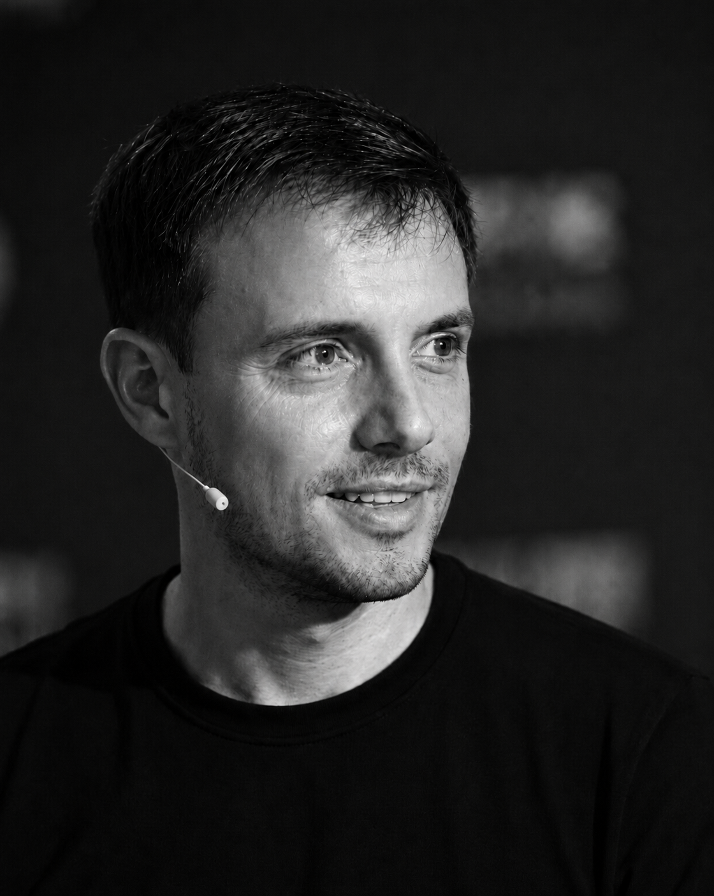

Lucas joins conferences, communities, classrooms, and company teams where people are serious about the craft of software.
Profile / 2026
Lucas
Montano
Lucas Montano is a Brazilian software engineer, content creator, speaker, and entrepreneur. He helps developers and entrepreneurs navigate complex problems, adopt AI, and grow professionally.

01 / About
Engineering, education & entrepreneurship.
Lucas began programming around age 12 and moved into mobile engineering. In 2010, he launched Finanças Pessoais, an Android app that surpassed one million downloads.
Today, his YouTube channel reaches more than 380,000 developers with tutorials, system design discussions, AI, and career insight for programmers.
02 / Products
Active
Projects.
- 01 / Club Stupid Button Club A developer community with 1:1 mentorship, an active Discord, AI-pipeline training, Perssua Premium, and in-person events.
- 02 / Writing Perssua An AI meeting copilot for live answers, translation, transcription, and notes.
- 03 / Practice System Design Arena A dedicated practice space for system design, architectural trade-offs, and engineering judgment.
- 04 / Stories The Bible App 25 Bible stories in casual Brazilian Portuguese, with three narrative styles and natural audio.
03 / Presence
Events, talks
& good questions.
His talks bring a practical perspective to software engineering, careers, and artificial intelligence.